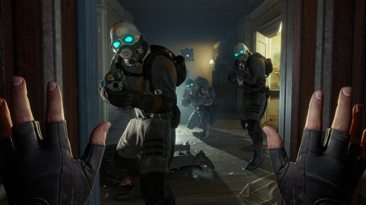

Half-Life: Alyx
A Half-Life: Alyx egy 2020-ban kiadott belső nézetes VR-játék. Fejlesztője és kiadója a Valve. Története időrendileg a Half-life sorozat első és második részének eseményei között zajlik. Benne a játékos Alyx Vance-t alakítja, aki igyekszik megszerezni a Combine szuperfegyverét. Játéktechnikai újdonsága a tárgyak mozgatására használható gravitációs kesztyű, ami hasonló a Half-Life 2 gravitációs fegyveréhez. Játékmechanikája a Half-Life sztenderd elemeiből (fizikai rejtvények, harc, felfedezés, túlélőhorror) építkezik. Grafikus motorja a Source 2.

A 2007-es Episode Two után a sorozathoz újabb rész vagy kiegészítő nem jelent meg, bár voltak cégen belüli fejlesztések. A Valve 2015 körül kezdett el kísérletezni a virtuális valósággal, felismerve a piaci űrt. Első VR-játékuk (The Lab, 2016) tapasztalataira építve több sorozatukat – köztük a Portalt – is megpróbálták átültetni az új környezetbe: végül a Half-Life-ot találták leginkább odavalónak. Az Alyx fejlesztése 2016-ban indult a cég történetének addigi legnagyobb fejlesztői gárdájával. Kiadását eredetileg a Valve Index VR-szemüveg 2019-es megjelenésére időzítették, de utóbb a történet átírása és ezzel a későbbi kiadás mellett döntöttek. A játék végül 2020 márciusában jelent meg Windowsra, 2020 májusában pedig Linuxra. Játszható a legtöbb PC-kompatibilis VR-szemüveggel. Grafikája, szinkronja, története és hangulata kritikailag dicsért. A virtuális valóság első közönségvonzó alkalmazásának (angolul: killer app) tartják.